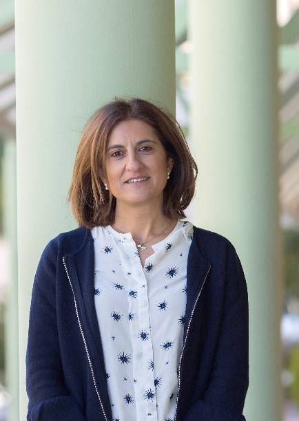
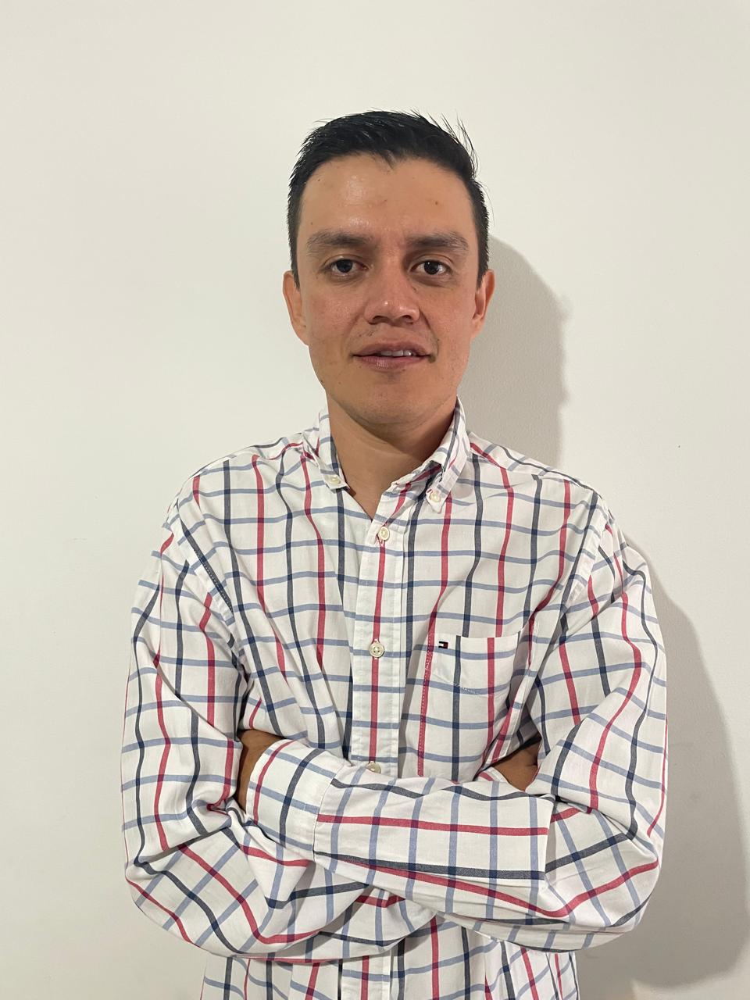

Equipo

Dr. Ángel Galán Martín
Coordinador del proyecto. Experto en la combinación de optimización matemática con análisis de ciclo de vida, desarrollando herramientas integradas para contribuir en la transición hacia una economía baja en carbono mediante soluciones innovadoras y sostenibles.

Dra. Inmaculada Romero Pulido
Especialista en procesos de biorrefinería, centrada en la investigación experimental del aprovechamiento de residuos agrícolas y agroindustriales para el desarrollo de soluciones sostenibles y eficientes.

Dr. Duban F. García Navas
Investigador postdoctoral especializado en el área de ingeniería química en el campo de hidrocarburos y energías renovables.
Sadiel Martín González
Investigador predoctoral especializado en el área de ingeniería de procesos y sistemas sostenibles.
Luis Carlos García Morán
Investigador predoctoral especializado en la valorización de biomasa para el desarrollo de procesos sostenibles de obtención de energía y bioproductos.
Antiguos miembros del equipo

Dra. Cristina Marzo Gago
Investigadora postdoctoral Juan de la Cierva, con amplia experiencia en operaciones a escala de laboratorio y piloto, enfocada en la valorización de residuos agroindustriales.
Dra. Déborah Pérez Almada
Estudiante de doctorado e ingeniera química con experiencia en el uso de herramientas de simulación de procesos y su combinación con análisis de ciclo de vida.